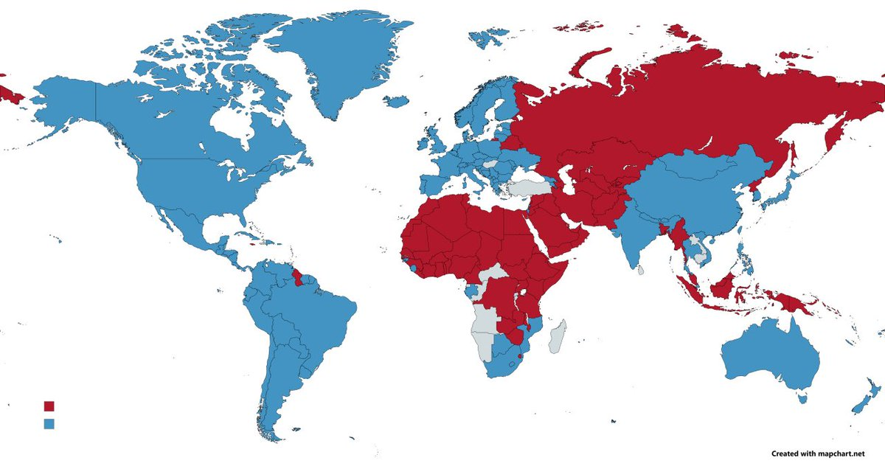

mortis
@0Yowlry
@ydoshnshxing15 @KiraMyao 因为很多国家直接有法律明文规定LGBTQ属于刑事犯罪，别说发展LGBTQ权力了，被发现身份都要完蛋，有些国家是1年监禁，有些是3年起步，有些是10年起步，有些15年，有些直接si刑

川和工团瑞穗🚩🔥
@ydoshnshxing15
@KiraMyao 涉及到大量第三世界国家时跨性别都已经是“奢侈”的问题了....哎